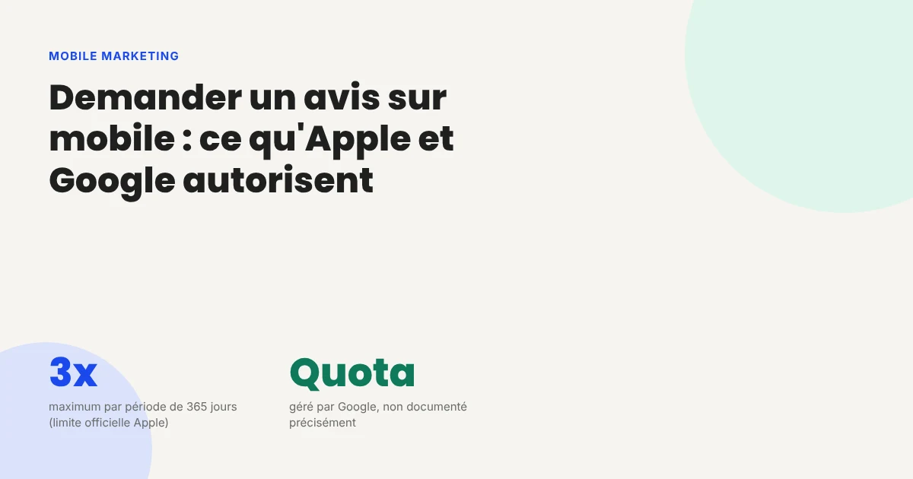

Demander un avis sur mobile : ce qu'Apple et Google autorisent (et ce que les apps ignorent)
Apple limite le prompt natif d'avis à 3 affichages par période de 365 jours, sans aucune confirmation côté app. Google applique un quota similaire sans en publier le détail exact. Deux contraintes techniques précises qui devraient entièrement dicter votre stratégie de demande d'avis — et qui sont pourtant largement ignorées.

La plupart des apps mobiles traitent la demande d'avis comme un détail d'implémentation : on appelle l'API native au bon endroit dans le code, et on passe au sujet suivant. C'est une erreur de cadrage. Apple et Google imposent chacun des contraintes précises et documentées sur la fréquence d'affichage du prompt natif — des contraintes qui, une fois comprises, devraient être le point de départ de toute stratégie de demande d'avis, pas un détail technique découvert après coup.
Ce qu'Apple autorise précisément, et ce qu'il ne dit jamais
La documentation officielle d'Apple sur SKStoreReviewController (le mécanisme qui gère les demandes d'avis sur iOS) fixe une limite claire : le système n'affiche le prompt natif qu'au maximum 3 fois sur une période de 365 jours, indépendamment du nombre de fois où l'app appelle la méthode de demande. L'API est volontairement minimale et n'offre aucun callback : l'app ne sait jamais si le prompt a réellement été affiché, ni si l'utilisateur a laissé une note. Apple précise aussi que le système n'affichera pas le prompt deux fois pour la même version de build. Cette opacité est assumée : Apple laisse le contrôle du où et du quand entièrement à l'app, tout en gardant la main sur la fréquence réelle d'affichage.
Ce que Google impose, en plus flou encore
Côté Android, l'API In-App Review de Google fonctionne sur un principe similaire : un quota contrôle la fréquence d'affichage du dialogue natif, mais la documentation officielle ne publie ni le nombre exact ni la période concernée — et prévient explicitement que ce quota peut changer, donc qu'il ne faut pas construire sa logique dessus. Deux règles sont en revanche explicites : ne jamais associer le déclenchement à un bouton ou une action explicite de l'utilisateur (le flux peut simplement ne rien afficher si le quota est atteint, ce qui casserait l'expérience d'un bouton dédié), et ne jamais poser de question de pré-qualification du type « aimez-vous l'app ? » avant de déclencher le prompt natif.
La stratégie de timing que ces contraintes dictent
Avec un nombre d'affichages aussi limité et aucune visibilité sur leur consommation réelle, chaque déclenchement du prompt natif doit être traité comme une ressource rare, pas comme un événement répétable à volonté. La pratique qui en découle directement, cohérente avec les deux écosystèmes : router les signaux de satisfaction en amont (score in-app, fin de tâche réussie, usage répété positif) vers une décision silencieuse côté app, et ne déclencher le prompt natif que pour les utilisateurs qui viennent de vivre un moment positif précis — jamais au lancement, jamais après une erreur, jamais de façon systématique à un palier fixe (comme « après 3 sessions ») sans tenir compte du contexte réel de l'utilisateur à cet instant.
Le piège du formulaire de pré-qualification
Une pratique répandue consiste à afficher d'abord un mini-sondage interne (« Que pensez-vous de l'app ? » avec un choix oui/non), puis à ne déclencher le prompt natif que pour les réponses positives, en redirigeant les réponses négatives vers un formulaire de feedback privé. Cette pratique n'est pas interdite en tant que telle, mais elle consomme quand même un des affichages limités si elle appelle l'API à chaque fois — la bonne implémentation ne déclenche l'appel natif que pour la branche positive, et garde la branche négative entièrement hors de l'API native. C'est une nuance d'implémentation qui change concrètement le nombre de « vraies » opportunités de demande d'avis qu'il reste sur l'année.
FAQ
Combien de fois peut-on demander un avis sur iOS ?
Apple limite le système à un maximum de 3 affichages du prompt natif par période de 365 jours, quelle que soit la fréquence à laquelle l'app appelle l'API. L'app ne reçoit aucune confirmation que le prompt a bien été affiché ni que l'utilisateur a noté l'app.
Google Play applique-t-il la même limite qu'Apple ?
Google applique également un quota sur l'affichage du dialogue natif, mais sans en communiquer précisément les règles ni la fréquence exacte. La documentation officielle recommande de ne pas s'appuyer sur ce quota et de gérer sa propre logique de fréquence côté app plutôt que de multiplier les appels à l'API.
Faut-il demander à l'utilisateur s'il est satisfait avant de déclencher le prompt natif ?
Google déconseille explicitement de faire précéder le prompt natif d'une question de type « aimez-vous l'app ? ». Une pratique plus robuste consiste à router les retours négatifs vers un formulaire de feedback interne, et à réserver le déclenchement du prompt natif aux utilisateurs qui viennent de vivre une interaction positive dans l'app.
Une stratégie ASO à structurer au-delà du simple prompt d'avis ?
Pour aller plus loin, voir la page Mobile Marketing, et l'article ce qui fait vraiment monter une app dans les stores en 2026.
Pour continuer sur ce sujet.